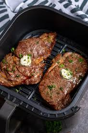

Oven Roasted Potatoes

How does one air fry a steak?
Steak can be daunting for many people who have never cooked steak or meats very often.
The air fryer is a very easy way to cook if utilized correctly! This mean not JUST using an air fryer.
You will need a nice stainless steel or cast iron pan to create a nice crust! The air fryer is just a replacement for an oven for some people who dont have one.
Ingredients
- your favorite cut of steak, at least 1 inch thick
- 3 garlic cloves
- 1 stick of butter
- paprika to taste
- salt
- black pepper
- avocado oil
Steps
- Generously salt every side of the steak
- Leave uncovered in the fridge for at least 30 minutes, or up to overnight
- take steak out of the fridge and season with black pepper and paprika to taste
- preheat airfryer to 300F
- cook steak in airfryer until internal reaches 115F
- heat up pan until water starts to bead and bounce around
- sear 2 minutes on each side, or until there is a nice crust on both.
- let rest for 10 minutes on the cutting board
- Enjoy!
Home